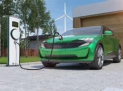

How to Preserve Our Earth
By : Anish Kodali
Our earth has been through many crises such as asteroids, earthquakes, tsunamis, and even hurricanes. However, there is one crisis which has been a main cause of us planning on moving to another planet. This crisis is known as global warming. Global warming wasn’t caused by any other creatures. It was caused by us humans! Humans have been burning fossil fuels or other things which are known as the greenhouse effect. These greenhouse gases and other things is what is harming our earth’s atmosphere. Forcing us to move to a different planet. In this slideshow I will show you ways and ideas to preserve our earth so we don’t need to take these desperate measures and actions.
The first example that we can use to preserve our earth is preserving electricity and power in our homes. Preserving electricity in our homes would be helpful due to it mainly being produced by coal, and other resources that could harm our earth’s atmosphere. If we were to preserve electricity, we can be able to preserve our earth. Saving electricity reduces the pollution that is emitted from non-renewable sources of energy. Preserving our energy and electricity will help our earth in many ways.
The second example for preventing global warming is to plant trees. There are many reasons to why you should plant trees, the main reason is because planting trees absorb the carbon dioxide and turn it into oxygen. This helps the atmosphere and the people since oxygen is a main component to our lives. Another reason of why we should plant trees is because not only does it help the atmosphere but it also helps the environment so many animals and plants could have environments in the areas of the trees.
The third and final example would be to stop using gas cars or let family or friends carpool with you. Letting your friends and family carpool with you means we have less carbon dioxide emissions getting released into the atmosphere so it means it won’t harm our atmosphere as much. We can also stop using gas cars and go use electric cars such as teslas and other types of electric cars. This would help the atmosphere since gas cars have carbon emissions and electric cars don’t have any emissions that harm the environment so it would be better to use electric cars.

Tools and Ideas used in this Project
There were many things I used for this project but one of the main things I used was Google AI, I used Google AI since it was easy and understandable to use. It also had fast answers and didn't ask for questions such as if you were a robot. Another thing I used was Visual Studio Code, Visual Studio Code is the main thing of this project and was coded entirely on this platform.